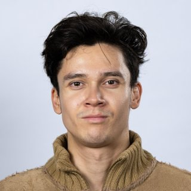
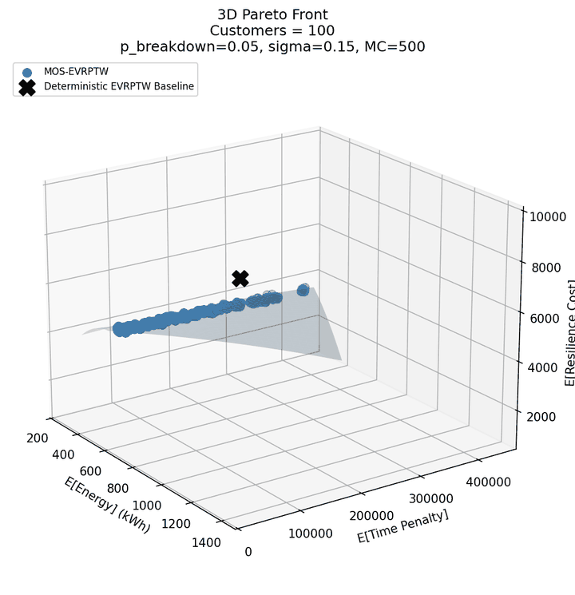
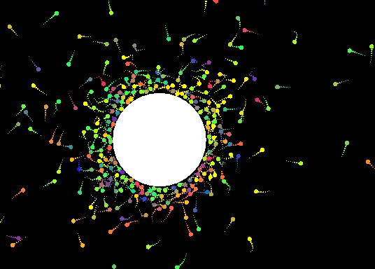

MSc Computer & Embedded Systems Engineering, TU Delft

MSc student in Computer & Embedded Systems Engineering at TU Delft (expected July 2028), with a BSc in Data Science and Artificial Intelligence from Leiden University (GPA 8.01/10, Honours). I build real-time, multithreaded and networked software in C++ and Python, and I work on embedded systems and on-device machine learning.
MSc Computer & Embedded Systems Engineering, TU Delft
09/2026 to 07/2028 (expected), Delft, Netherlands
Focus on software engineering, hardware engineering and systems engineering.
Key courses: Real-Time Systems, Processor Design Project, Computer Arithmetic, High-Performance and AI Architectures, Reconfigurable Computing Design, Hardware Dependability.
BSc Data Science and Artificial Intelligence, Leiden University
09/2023 to 07/2026, Leiden, Netherlands
GPA 8.01/10 (top 10%), Honours student. Focus on algorithm design, machine learning, reinforcement learning and scalable computation.
Key courses: Algorithms & Data Structures, Software Engineering (agile team project for an external client), Software Development (airline ticketing system with a full test suite and CI/CD lifecycle), Essentials of Computer Systems.
Minor in Applied Mathematics (Finance), TU Delft
09/2025 to 01/2026, Delft, Netherlands
Quantitative finance and mathematical modelling: mathematical finance (stochastics, Itô calculus, Brownian motion), time series, option valuation methods (Monte Carlo with variance reduction, finite difference methods) and risk management.
2. Experience
Software Developer and Data Platform Engineer, OpenML [1]
From 02/2026, Leiden, Netherlands
Designed and implemented a high-throughput dataset upload interface in Python, built for 100+ concurrent users uploading datasets of 100 GB or more through chunked transfer, with a multithreaded design for throughput and stability under load.
Built backend data ingestion pipelines and validation logic, with automated quality checks and Croissant metadata for each dataset.
Benchmarked pipeline correctness and system performance across large datasets.
Maintained GitHub Actions CI/CD pipelines with automated test suites and code quality checks, and wrote the system documentation.
Gathered requirements from stakeholders and communicated technical decisions in an agile (Scrum) team.
Lead Developer and Systems Administrator, U.S. Ambassador's Entrepreneurial Challenge
2019 to 2020, Helsinki, Finland
Designed and deployed a MERN stack web application that won first place nationally.
Architected a REST API connecting the frontend to a live ML inference backend.
Deployed on AWS inside a VPC with private subnets and security group containment, and managed all cloud infrastructure end to end.
3. Projects
Multi-Objective Stochastic Electric Vehicle Routing with Time Windows (bachelor thesis) [2]
2026, Python, grade 9.0/10 (top 3%)
A simheuristic for routing electric delivery vehicles when traffic congestion, breakdowns and battery depletion can disrupt a plan, written with Yingjie Fan. Routes are evolved with NSGA-II and each candidate is scored by Monte Carlo simulation over sampled disruptions, using a physics-based energy model. On the rc101_21 benchmark instance, the knee point of the Pareto front used 26 to 73% less energy and 18 to 53% less recourse cost than a deterministic VRPy baseline as the instance grew from 10 to 100 customers. Time-window violations rose instead, by an amount that depends on customer geometry and disruption risk. Published in the ICCL 2026 proceedings (Springer, Lecture Notes in Computer Science).

Pareto front for 100 customers (rc101_21) against the deterministic baseline, marked with a cross.
A real-time simulator processing 100k+ objects at 60+ FPS, using CPU-to-GPU offloading via OpenCL, a thread pool and a spatial grid for collision checks. Rendered with OpenGL and GLFW, with an ImGui control panel.

Bodies falling into orbit around a massive object.
Firmware that turns the XIAO ESP32S3 Sense into an always-on dashcam, extending Seeed's camera web server example. The board serves a 1600 x 1200 live stream while a FreeRTOS task pinned to core 0, away from the web server, writes every frame to the SD card in NTP-timestamped hourly folders. Frame buffer count and JPEG quality are tuned so full-resolution capture fits in PSRAM without allocation failures. A Python companion recognises the card when it is plugged in, remembers which frames it has already processed and stitches each hour into an MP4 with FFmpeg.
A Factorio 2.0 mod that routes a conveyor belt between two points with hierarchical A* (HPA*). It prefers fewer turns, crosses obstacles with underground belts and spreads the search and construction over game ticks under a fixed work budget, so long routes never stall the game.
A RESTful API with Express.js and TypeScript and database queries optimised through Prisma ORM on PostgreSQL. Containerised microservices with OAuth 2.0 and JWT authentication, and a full automated test suite with CI/CD.